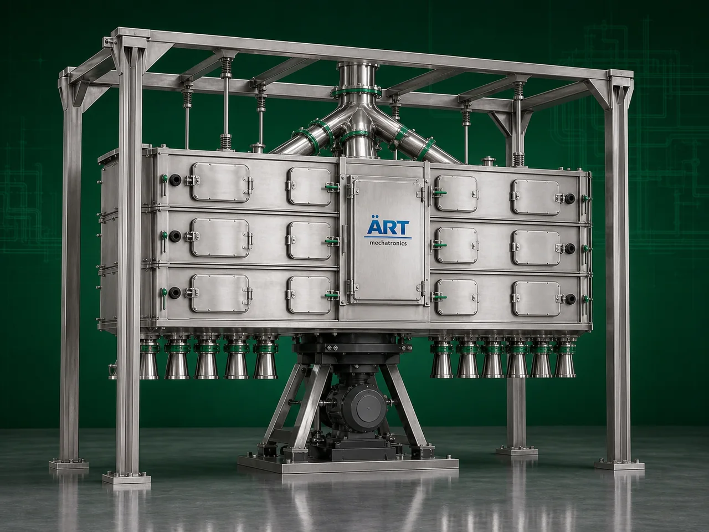

Plan Sifter Machine (Industrial Multi Deck Sifting & Classification System)
A Plan Sifter Machine, also known as a Plansifter, Multi Deck Sifter, or Industrial Flour Sifting System, is a highly advanced industrial screening and grading equipment designed for sifting, classifying, grading, and separating flour, semolina, powders, granules, bran, and food products into multiple particle sizes with high precision.

About the Plan Sifter
Plan sifters are one of the most important machines used in:
- Flour mills
- Grain processing plants
- Food processing industries
- Powder classification systems
where accurate particle separation, product consistency, and high-capacity continuous operation are essential.
The machine operates using:
- Multi-deck sieve boxes
- Reciprocating motion
- Vibratory sifting action
- Mesh-based classification
to efficiently separate materials into different grades and particle sizes.
Plan sifters are highly suitable for:
- Flour grading
- Atta classification
- Maida separation
- Bran separation
- Semolina grading
- Powder particle classification
- Food powder screening
ART Mechatronics offers high-performance plan sifter machines, engineered for high screening accuracy, hygienic processing, energy-efficient operation, and reliable industrial performance.
One machine, many names
Buyers search for this equipment under many terms — we manufacture all of them:
Working Principle of Plan Sifter Machine
Enables accurate particle separation and grading
Machine can separate:
- Fine flour
- Medium particles
- Bran
- Coarse particles
Types of Plan Sifter Machines
- 1. Flour Mill Plan Sifter
Specially designed for:
- Wheat flour milling plants
- Atta and maida classification
- 2. Multi Deck Plan Sifter
Uses: ✔ Multiple sieve compartments for precise multi-grade separation.
- 3. Vibro Plansifter Machine
Combines: ✔ Vibratory motion and multi-stage sifting for improved screening efficiency.
- 4. Industrial Powder Plansifter
Suitable for:
- Chemical powders
- Food powders
- Fine granular materials
- 5. Large Capacity Plan Sifter
Designed for: ✔ High-throughput industrial flour mills
- 6. Stainless Steel Food Grade Plansifter
Suitable for: ✔ Hygienic food and pharmaceutical processing applications
Industries Using Plan Sifter Machine
🌾 Flour Mill Industry
- Wheat flour classification and grading
🍞 Food Processing Industry
- Powder and ingredient screening
🍚 Grain Processing Industry
- Fine particle separation and grading
💊 Pharmaceutical Industry
- Powder particle classification
⚗️ Chemical Industry
- Fine powder screening applications
🌶️ Spice Industry
- Spice powder grading and separation
Features & Advantages
- High-precision particle classification
- Multi-stage grading capability
- High-capacity continuous operation
- Uniform product quality and consistency
- Efficient flour and powder separation
- Heavy-duty industrial construction
- Low maintenance requirement
- Energy-efficient operation
- Hygienic and easy-to-clean design
Technical Highlights
- Screening Technology:
- Reciprocating sifting
- Multi-deck mesh classification
- Sieve Arrangement:
- Multi compartment design
- Construction: Stainless Steel / Mild Steel
- Mesh Size: Customizable according to application
- Capacity: Small to large industrial throughput
- Operation:
- Semi-automatic
- Fully automatic PLC-based systems
Turnkey Plan Sifting Solutions
ART Mechatronics offers:
- Complete plansifter systems
- Flour mill integration
- Pneumatic conveying integration
- Dust collection systems
- Installation & commissioning
- After-sales service & AMC
Why Choose Art Mechatronics
- Expertise in industrial flour and powder classification systems
- Customized solutions for multiple industries
- High-performance and durable machine construction
- Energy-efficient and reliable industrial designs
- Proven industrial performance across sectors
Applications
- Flour Mills
- Food Processing Plants
- Grain Processing Industries
- Pharmaceutical Manufacturing Units
- Chemical Powder Processing Plants
- Spice Manufacturing Facilities
Related Cleaning, Sorting & Grading machines
Get pricing & specs for the Plan Sifter
Share the product, target capacity, current process and plant location. These details help our engineers discuss the right machine or line configuration.
One partner, from design to start-up
ART Mechatronics designs, manufactures, installs and commissions your Plan Sifter solution with regional presence in India, UAE and Thailand.